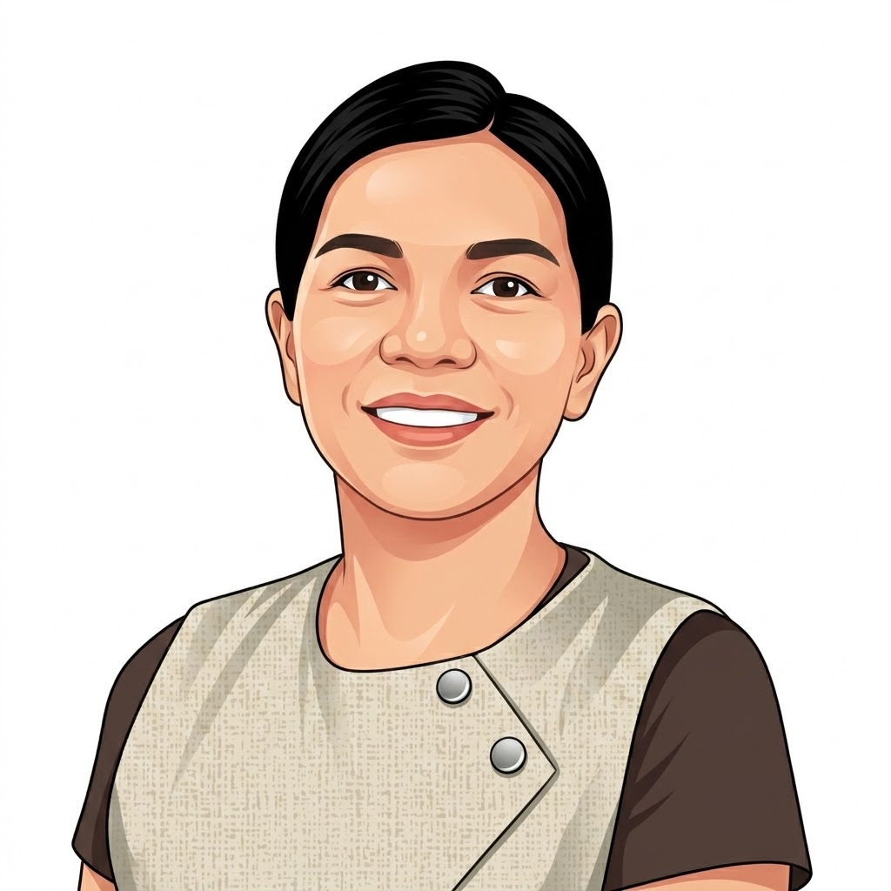
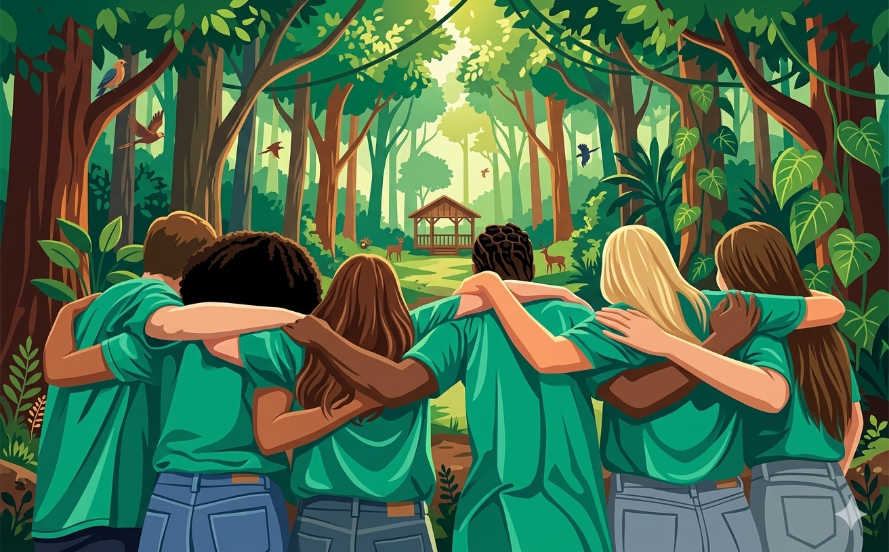
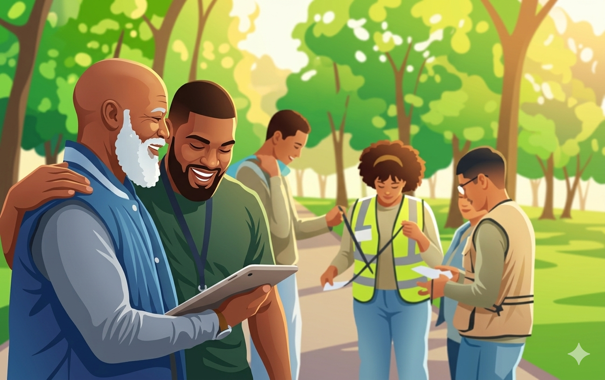
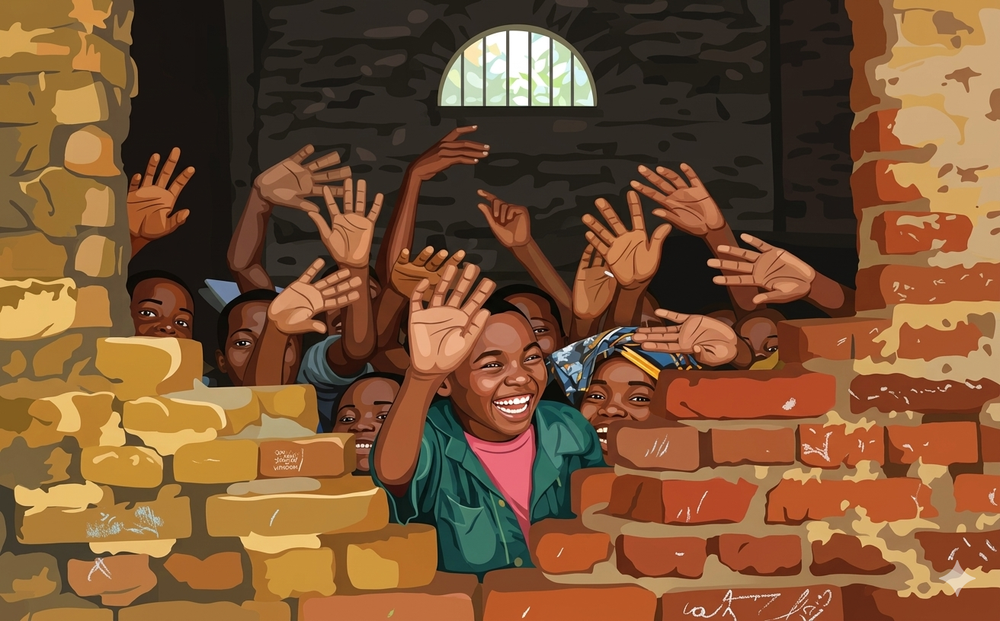
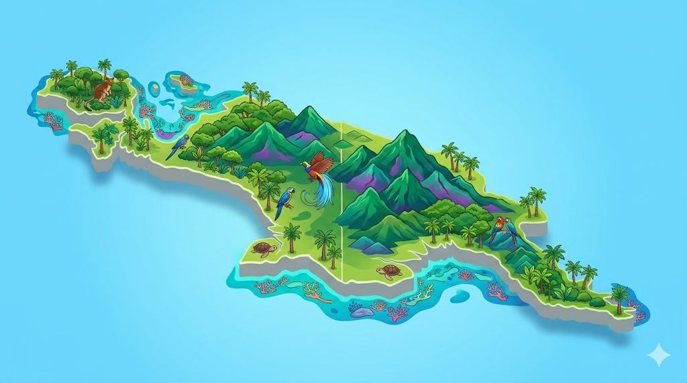
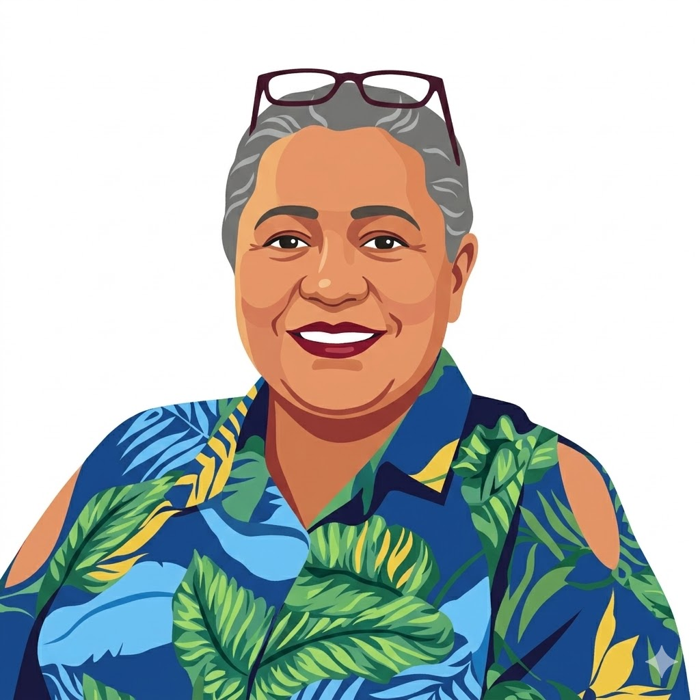
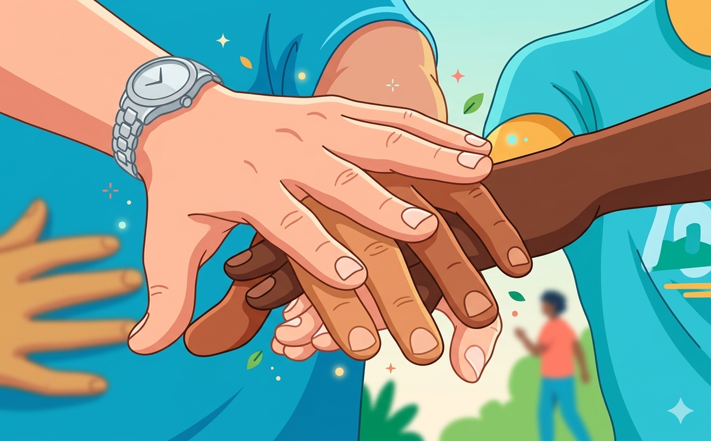
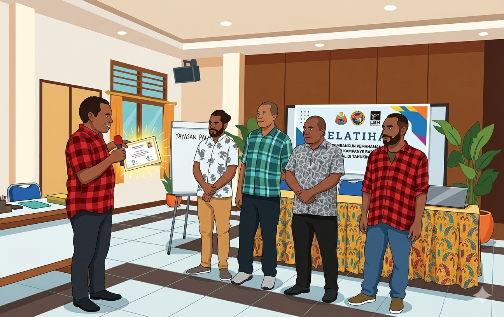

Pendiri & Pembina
Netty Bakara
Memastikan arah kelembagaan selaras dengan visi konservasi dan pemberdayaan masyarakat adat.
Desain ini merupakan prototype usulan berdasarkan analisa oleh tim www.nokensoft.com. Seluruh data dan informasi pada halaman ini disusun menggunakan metode pencarian di media sosial dan internet dengan bantuan AI.
Yayasan Ekologi Sahul Lestari (YESL) hadir di Tanah Papua sejak 2019 untuk melindungi kedaulatan masyarakat adat dalam pengelolaan daratan dan perairan secara berkelanjutan.
2019
Tahun Berdiri
Mimika
Pusat Operasional
Tanah Papua
Jangkauan Program
Ikuti perkembangan terbaru, cerita dari lapangan, dan catatan refleksi kami dalam upaya pemberdayaan masyarakat adat dan pelestarian lingkungan.
Bagaimana kelompok masyarakat adat mengoptimalkan ruang darat dan perairan berbasis kearifan lokal yang berkelanjutan.

Menelisik proses penyusunan profil wilayah adat sebagai basis advokasi dan pelindungan hak-hak masyarakat lokal.

Kolaborasi multipihak dalam mengembangkan potensi komoditas lokal yang adil tanpa merusak kelestarian alam sekitar.

Menjamin kesinambungan program perlindungan hak adat lewat skema pendanaan yang inklusif dan transparan.
2019
Berdiri
Mimika
Pusat

Yayasan Ekologi Sahul Lestari (YESL) merupakan organisasi nirlaba yang hadir di Tanah Papua sejak 2019 dan berkedudukan di Kabupaten Mimika, Provinsi Papua Tengah, dengan mandat memperkuat kedaulatan masyarakat adat dalam pengelolaan daratan dan perairan.
Ekologi berarti relasi makhluk hidup dan lingkungannya, Sahul merujuk pada bentang biogeografi Australia-Papua, dan Lestari menegaskan komitmen menjaga keberlanjutan.
Warna putih melambangkan ketulusan dan kepercayaan, hijau mencerminkan keberlanjutan tanah dan manusia Papua, motif Papua-berdaun menunjukkan kekayaan alam, serta lingkaran terputus menggambarkan sejarah Paparan Sahul.
"Terwujudnya tata kelola sumber daya alam yang adil dan lestari bagi komunitas adat."
Terwujudnya tata kelola sumber daya alam yang adil dan lestari bagi komunitas adat di Tanah Papua.
Tata Kelola BerkeadilanMemperkuat kapasitas masyarakat adat, mendorong pengakuan hukum wilayah adat, melestarikan praktik tradisional, serta mengembangkan ekonomi lokal berkelanjutan.
Penguatan Adat & EkosistemYESL berkedudukan di Kabupaten Mimika, Provinsi Papua Tengah dan bekerja bersama komunitas adat di berbagai wilayah Tanah Papua.
Lihat LokasiMengutamakan nilai Hak Asasi Manusia dalam sikap, tindakan, dan pengambilan keputusan organisasi.
Melibatkan konstituen secara aktif dan setara dalam proses keputusan kolektif.
Menjamin hak atas kehidupan dan lingkungan layak tanpa diskriminasi jenis kelamin, agama, dan status sosial.
Menjaga kesamaan hak antar generasi melalui perlibatan konstituen dalam proses kolektif.
Memastikan akses manfaat sumber daya alam dan pengakuan terhadap keragaman cara masyarakat mengelola alam.
Menolak segala bentuk praktik kekerasan oleh individu, kelompok, modal, maupun negara.
Struktur ini memperkuat peran kelembagaan YESL dalam advokasi, pendampingan komunitas adat, dan tata kelola sumber daya alam yang lestari.
Profil tim YESL berdasarkan tiga kelompok peran untuk memastikan program berjalan efektif, inklusif, dan berkelanjutan.

Pendiri & Pembina
Memastikan arah kelembagaan selaras dengan visi konservasi dan pemberdayaan masyarakat adat.

Pengawas
Melakukan pengawasan agar tata kelola program tetap akuntabel dan transparan.
Direktur
Mengelola strategi organisasi dan kemitraan untuk memperluas dampak program YESL.
Program Manager
Mengoordinasikan perencanaan dan pelaksanaan kegiatan agar tepat sasaran di lapangan.

Finance & Admin
Menangani kebutuhan administrasi dan keuangan program secara tertib dan efisien.
Field Officer
Mendampingi komunitas secara langsung untuk memastikan kualitas implementasi kegiatan.

Fasilitator Lokal
Menjembatani koordinasi dengan masyarakat adat agar komunikasi program tetap kontekstual.
Ringkasan capaian program YESL dari pemetaan partisipatif, kajian masyarakat adat, hingga penguatan perhutanan sosial di Tanah Papua.
Setiap dukungan yang Anda salurkan bersama Yayasan Ekologi Sahul Lestari (YESL) akan dialokasikan langsung untuk mendanai program pemetaan partisipatif wilayah adat, penguatan kapasitas perempuan pengelola hutan desa, serta kajian ekosobling di gardu terdepan Papua.
Transparansi adalah prioritas kami. Seluruh laporan penyaluran dana dan capaian program akan dilaporkan secara berkala kepada publik dan para mitra pendukung.
Bersama YESL, mari memperkuat kapasitas masyarakat adat, perlindungan wilayah adat, dan pengembangan ekonomi lokal berkelanjutan.
Hubungi YESL